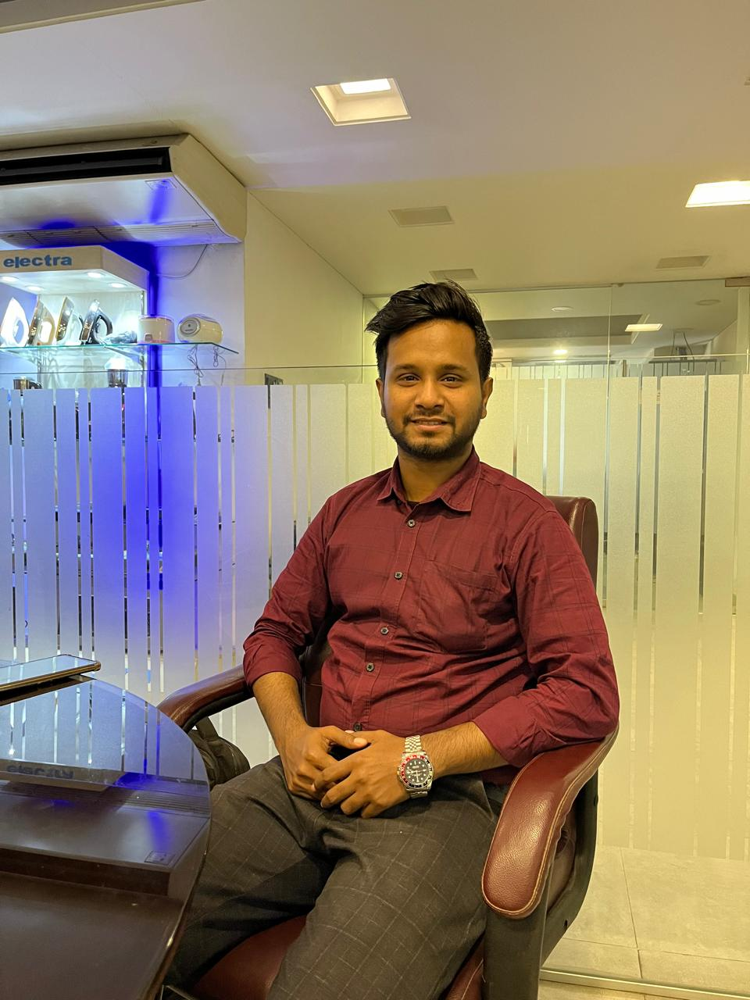

Md. Sajid Hossain

Summary
I'm a hard working person and love to learn new skills and I have an experience in Corporate Sales
Work Experience
-
Assitant Manager (Sales & Procurement) - Touchstone Home Electronics Co. Ltd
2022 - Current
- Generating sales to new and existing customers
- Managing customers and local suppliers
- Collaborating with Foreign Suppliers for goods purpose
- Communication with Factory for production supply
- Other relavent work as per Management order
-
Accounts Executive - Global Village International
2020 - 2022
- Keeping records of all daily transactions.
- Maintaining petty cash.
- Adjusting all kinds of journal vouchers
- Recording accounts receivable & accounts payable
- Recording the entries on Tally ERP
Education
-
Bachelor of Business Adminstration - Eastern University
2017 - 2021
- Major : Finance
- Result : CGPA 3.42 out of 4.00
-
Advanced Level (A-Level) - British Council
2013 - 2015
- Result : GPA 2.5 out of 5.00
-
Ordinary Level (O-Level) - British Council
2012 - 2013
- Result : GPA 4.0 out of 5.00
Skills
- Tally ERP 9
- MS Office
- Organizational Skils
- Customer Service
Other